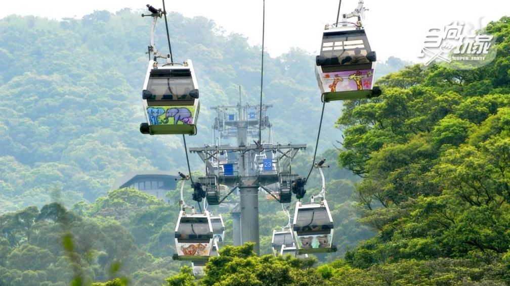

景點介紹
貓空纜車是臺灣臺北市文山區於2007年7月4日啟用的纜車系統。路線由臺北市立動物園西南側 起，至貓空地區，全長4.03公里，共設有4站提供上下車服務。貓空纜車為台北市首座觀光休 憩纜車，同時亦是臺灣最長、首座具有大眾運輸性質的纜車。
2008年9月，薔蜜颱風侵台，造成第16號塔柱地基嚴重流失，經技師公會鑑定後有安全顧慮而 停駛，直至2010年3月才恢復正常營運。在停駛期間，新增設貓空纜車服務中心，另設置貓纜 動物園站前大型動物造型音樂鐘、車站附近的景觀水舞噴泉等。
營運單位是臺北捷運公司。
